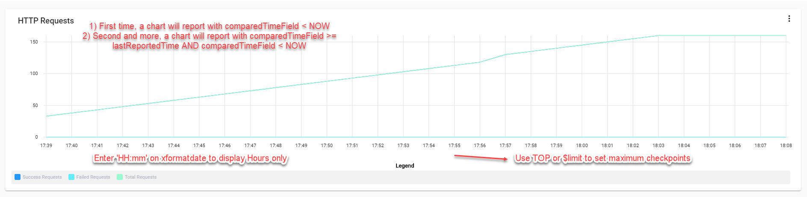

Chart
The documentation applies to: v0.8.0
v0.8.0
Preparation knowledge¶
Before you read, please ensure you must complete this step. This step will help you to a basic knowledge about Dynamic List Component.
Warning
We assume you have an experience to work with LET Portal, at least login/menu and how to redirect. We just provide some short steps for letting you know a main points
Chart Info¶
We only highlight two complicated fields which are Chart Type and Mapping Projection
On LET Portal, we are using ngx-charts for rendering Chart. So that a format data must be two models below. Note: A data must be an array
``` json tab="Simple"
[{
name: 'name',
value: 'value'
}]
``` json tab="Grouped"
[{
name: 'name',
series: [
{
name: 'name',
value:'value'
}
]
}]
Tip
According to ngx-charts, x axis will be name and y axis will be value on mapping projection.
Based on json data, Mapping Projection is used to map a data when you query on database.
Mapping data - Example of Simple¶
For example of Simple chart, a response data from server-side is
``` json tab="Database response" { result: [ { text: 'Success', count: 18 }, { text: 'Fail', count: 0 } ] }
Then with mapping projection is `name=text;value=count`, LET Portal will take an array of `result` property to project. A data will be
``` json tab="Chart data"
[
{
name: 'Success',
value: 18
},
{
name: 'Fail',
value: 0
}
]
Mapping data - Example of Grouped¶
With Grouped, group of mapping projection represents to name of Grouped Json.
For example
``` json tab="Database response" { result: [ { text: 'Success', count: 18, monitor: 'HTTP' }, { text: 'Fail', count: 0, monitor: 'Memory' } ] }
With mapping projection is `name=text;value=count;group=monitor`, a chart data is
``` json tab="Chart data"
[
{
name: 'HTTP',
series: [
{
name: 'Success',
value: 18
}
]
},
{
name: 'Memory',
series: [
{
name: 'Fail',
value: 0
}
]
}
]
For Simple Chart, Chart Type don't have a Grouped name, otherwise it has.
You also can prefer this link above to see a sample chart
Datasource¶
Based on a required data for Chart, LET Portal is supporting two database types are MongoDB and SQL-Based. You can read these sections for How to query database
Options¶
How to setup real-time chart¶
We only focus on how to setup real-time chart by some options. Let's take a look on 3 options below:
allowrealtime: Enable real-time chart. Default: false.timetorefresh: A duration to refresh a chart, on seconds. Default: 60comparerealtimefield: A date field MUST be used to compare with (NOW - timetorefresh). Default: empty
We have two real-time types, one is interval refresh and one is sequential data nearest NOW. Also you need to read MongoDB and SQL for typing Query
SQL
You need to put {{REAL_TIME}} word on your SQL because it helps LET Portal to generate a real-time condition
Interval refresh data¶
This real-time report type is a report will spam many requests in interval time. There are no changing number of records on result.
For this setup, you only set allowrealtime to true and timetorefresh to 60. Ensure comparerealtimefield is NULL.
LET Portal will recall a query after timetorefresh seconds.
Usage
Interval refresh data is very useful for calculated report such as: Sale report, Revenue, etc. In the example below, it is a grouped HTTP counters of one service.
Sequential data¶
This real-time chart type is a report will try to get more and more data from time to time. The number of records is very different per call.
For this setup, you set allowrealtime to true and timetorefresh to 60. Ensure comparerealtimefield is A datetime field on database. LET Portal will help you to get data based on this field, by use some advanced techniques.
Maximum records per call
Ensure you have to set a { $limit: x } for MongoDB or TOP x records for SQL. This will help you to keep x axis has maximum x checkpoints. We always maintain maximum checkpoints on x axis, older data will be removed.
Now let take a look on this flow below to help you know a Sequential data.
This is one example of Sequential data which we used on LET Portal.

Set Min Max for number range¶
If you have a requirement for setting min max value for x and y, you can enter x=[0,100];y=[0,1000] on datarange field
Format date value¶
We use momentjs to format a x axis value. You should enter a format pattern on xformatdate. For example, you want to display a real-time chart only Hour and Minute, so you should enter HH:mm.
Styling chart¶
colors option will help you to style your chart. You can use style theme or custom colors array by yourself.
- Custom colors: you can enter
["red","blue","yellow"] - Style theme: many available themes are
["vivid"]["natural"]["horizon"], etc. You can see themes on ngx-charts page.
Chart Filters¶
If you have a requirement for filtering chart data such as Display report between August 2019 and August 2020 or Display sale report has a revenue more than 10 milions, so Chart Filter are yours.
Limitation
Chart Filter can't be applied for Sequential data and you need to put {{FILTER}} on your SQL
As Dynamic List or Standard, we also provide Population Filters for Chart. It will help you to generate quickly a Chart Filter based on example result.
Chart Filter Options¶
After you populate chart filters, you can edit this filter by clicking on icon Edit on the same row
Control Types¶
| Control Name | Allow Multiple | Range Value | Default Value |
|---|---|---|---|
| Checkbox | No | ||
| Select | Yes | Any value based on Datasource | |
| NumerPicker | Yes | [0,1,2] or [0..1] or [0..2..10] or ['0-10', '11-20'] | 0 or '0-10' or [0,1] or ['0-10'] |
| DatePicker | Yes | Blank or['1970-01-01'] or ['Now'] or ['Now-5'] or ['Now+5'] or ['1970-01-01', '2020-02-02'] or ['1970-01-01', 'Now'] | Any value on Range |
| MonthYearPicker | Yes | Blank or ['2020-02'] or ['Now'] or ['Now-5'] or ['Now+5'] or ['1970-01', 'Now'] | '2020-02' or ['2020-02','2020-03'] |
NumberPicker¶
NumberPicker allows you to generate a Selector with shortcut datesource. Let's go one by one of Range value.
Note
There are no different between Single and Multiple Choice on NumberPicker
[0,1,2] => [0,1,2]
[0..5] => [0,1,2,3,4,5] // Speard out start-end
[0..2..10] => [0,2,4,6,10] // Speard out start-end with increasing number
['0-10','11-20'] => ['0-10','11-20'] // Allow choose different number range
DatePicker¶
DatePicker allows you to generate a single DatePicker control or two DatePicker controls for Start Date and End Date. You can use Range Value to set min-max date value on each DatePicker
Multiple
Is Multiple is true that means a DatePicker filter is a start-end DatePicker
Blank // Min=1970-01-01 Max=Now
['1971-01-01'] //Min=1971-01-01 Max=Now + 30 years
['Now'] //Min=Now Max=Now + 30 years
['Now-5'] //Min=Now - 5d Max=Now + 30 years
['Now+5'] //Min=Now + 5d Max=Now + 30 years
['1971-01-01', '2020-02-02'] //Min=1971-01-01 Max=2020-02-02
Now
Now is a keyword to help LET Portal get a current Date
MonthYearPicker¶
MonthYearPicker allows you to generate a single MonthYearPicker control or two MonthYearPicker controls for Start Month and End Month. You can use Range Value to set min-max month value on each MonthYearPicker
Multiple
Is Multiple is true that means a MonthYearPicker filter is a start-end MonthYearPicker
Blank // Min=1970-01 Max=Month of Now
['1971-01'] //Min=1971-01 Max=Month of (Now + 30 years)
['Now'] //Min=Month of Now Max=Month of (Now + 30 years)
['Now-5'] //Min=Month of (Now - 5 months) Max=Month of (Now + 30 years)
['Now+5'] //Min=Month of (Now + 5 months) Max=Month of (Now + 30 years)
['1971-01', '2020-02'] //Min=1971-01 Max=2020-02